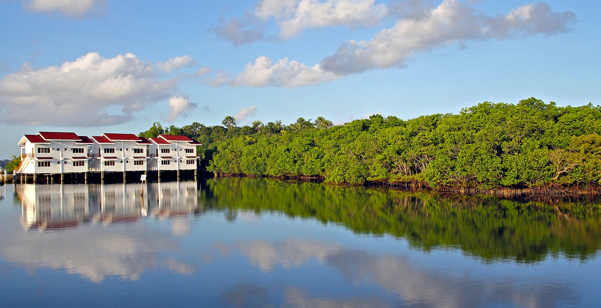
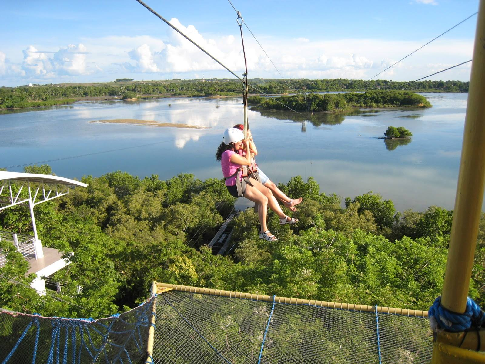
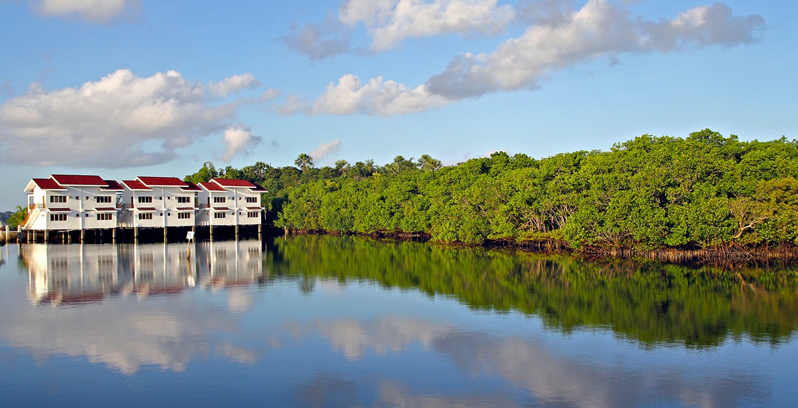
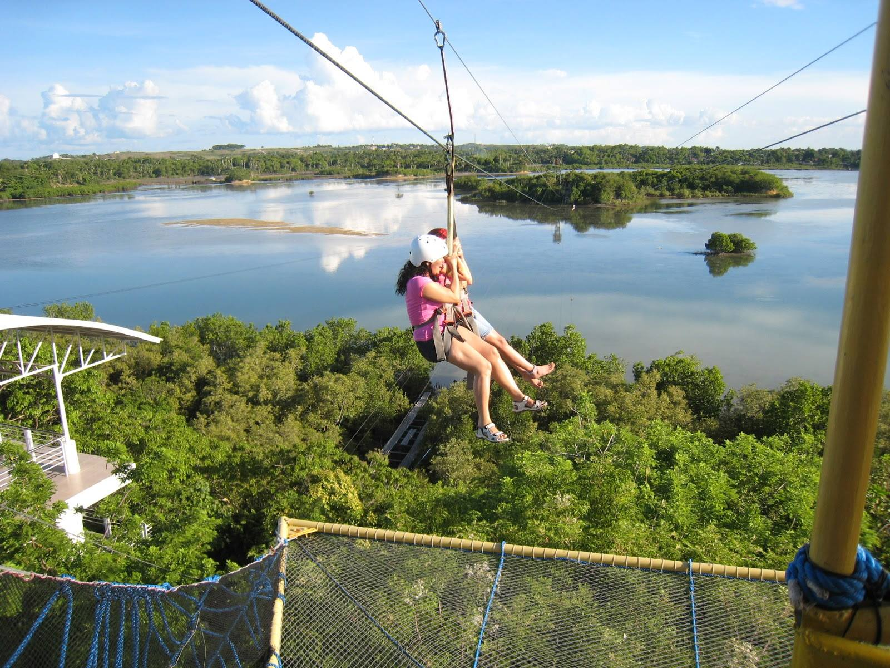
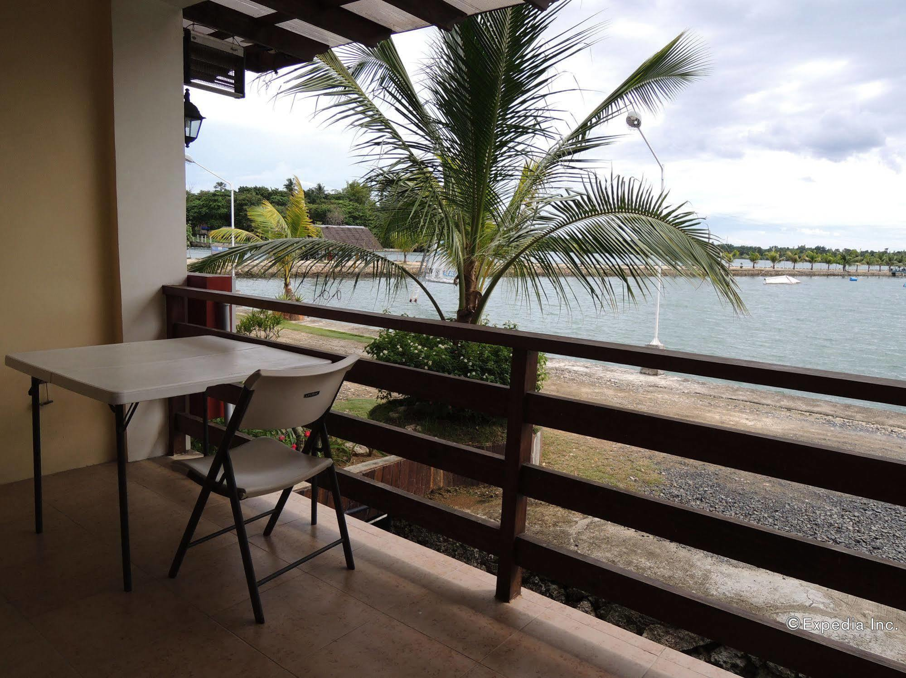
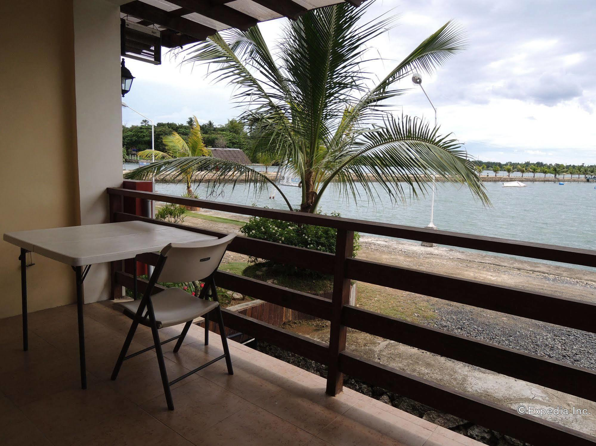

 

ABOUT THE PLACE
Papa Kit's Marina and Fishing Lagoon in Liloan, Cebu, is a popular recreational spot offering a variety of outdoor activities, particularly for those interested in fishing and water-based adventures. The facility is designed to cater to both casual visitors and serious anglers, featuring well-maintained fishing lagoons stocked with a variety of fish species. In addition to fishing, the venue offers activities such as kayaking, boating, and jet skiing, making it a great destination for families, groups, or anyone looking to enjoy a day outdoors. The property also has a relaxing atmosphere with scenic views, making it an ideal place for picnics, dining, or simply unwinding by the water. Papa Kit’s Marina and Fishing Lagoon is also known for its laid-back vibe and friendly service, attracting both locals and tourists who want to experience Cebu's natural beauty and engage in fun, water-based activities.